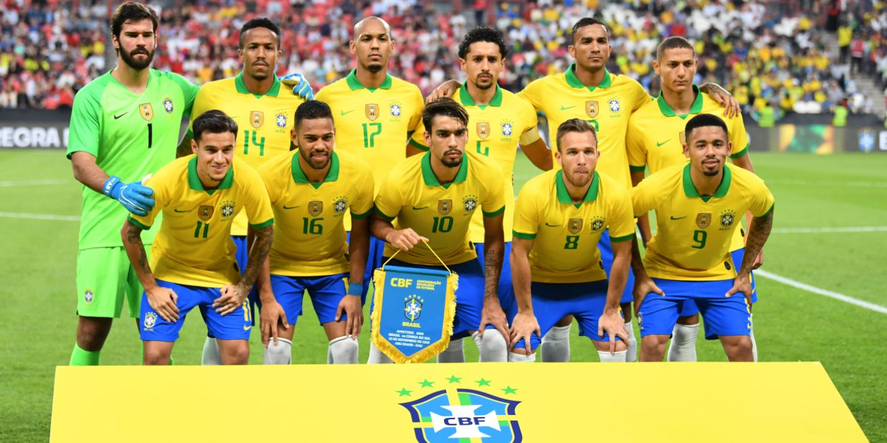

Welcome to the Brazilian National Football Team Website
Explore the rich history, exceptional players, and upcoming fixtures of the Brazilian national football team.
The Brazilian national football team, often referred to as the "Seleção," is one of the most successful and iconic teams in the history of international football. With a record five FIFA World Cup victories, they have established themselves as a dominant force on the global stage. Known for their flair, creativity, and attacking style of play, the Brazilian team has produced some of the greatest players to ever grace the game, including legends like Pelé, Zico, Ronaldo, Ronaldinho, and many more.
Through this website, you'll have the opportunity to relive the team's best moments, learn about their legendary players, and stay updated with their upcoming fixtures. Join us in celebrating the passion and legacy of the Brazilian national football team!
